Introdução à Estatística e Análise Exploratória de Dados
Introdução
Este material cobre as Semanas 1 e 2 do plano de ensino: noções gerais sobre Estatística, alfabetização científica, população e amostra, classificação de variáveis, níveis de mensuração, coleta e representação de dados, e distribuição de frequências (histograma e boxplot).
Slides originais disponíveis AQUI.
Noções Gerais sobre Estatística
Estatística é a ciência que tem por objetivo orientar a coleta, o resumo, a apresentação, a análise e a interpretação dos dados. Em outras palavras, é a ciência que coleta, organiza, analisa e interpreta dados, apoiando a tomada de decisões em situações de incerteza. É muito utilizada em experimentos agrícolas e zootécnicos — por exemplo, na avaliação da produtividade de culturas ou do ganho de peso animal.
A Estatística se divide em duas grandes frentes:
- Estatística descritiva: envolvida com o resumo e a apresentação dos dados; e
- Estatística inferencial: ajuda a concluir sobre o conjunto maior de dados (população) quando apenas uma parte deste conjunto for estudada (amostra).
Alfabetização científica
Alfabetização científica é a capacidade de interpretar dados e resultados científicos: compreender gráficos, tabelas e conclusões estatísticas. Ela é fundamental para a leitura de artigos científicos em Agronomia e Zootecnia, e evita interpretações equivocadas de resultados experimentais — um problema mais comum do que se imagina, inclusive na cobertura jornalística de dados (veja, por exemplo, o vídeo disponível no Moodle sobre interpretações equivocadas de dados durante a pandemia de Covid-19, que motivou inclusive um workshop de letramento estatístico para jornalistas).
Um bom ponto de partida para pensar em alfabetização científica é entender as etapas de uma pesquisa científica e onde a Estatística entra nesse processo — tanto na metodologia da área de estudo quanto na metodologia estatística propriamente dita:
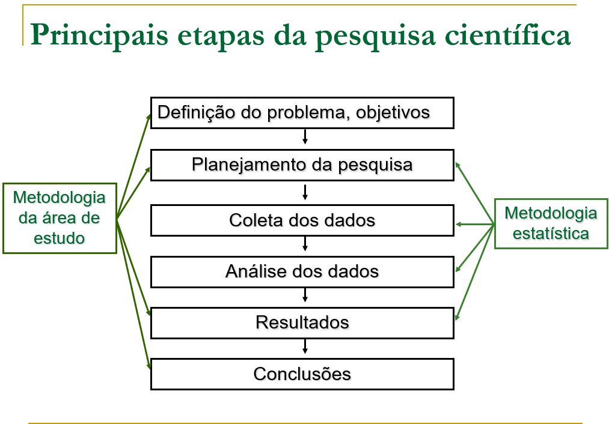
População e Amostra
- População: conjunto total de indivíduos ou observações de interesse que apresentam, pelo menos, uma característica em comum.
- Amostra: subconjunto representativo (ou não) da população.
Uma boa intuição para essa distinção: “um chef de cozinha prova seu prato com uma colherada antes de servir toda a panela”. Não é preciso comer o prato inteiro para saber se o tempero está bom.
Exemplo de população: todo o rebanho bovino de uma fazenda. Exemplo de amostra: 30 animais selecionados para avaliação.
Variáveis: exemplo motivacional
Considere uma população — o rebanho total de vacas de uma fazenda — e uma característica observável \(X\) nesse rebanho (por exemplo, \(X_1\), \(X_2\), \(X_3\), …). Um exemplo concreto: estimar a proporção de vacas com a doença da vaca louca.
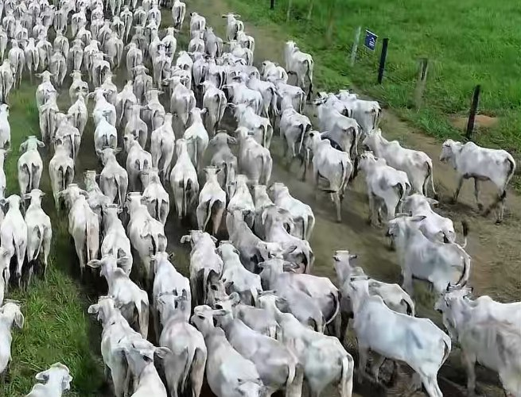
- População: rebanho total de vacas de uma fazenda.
- Característica \(X\) observável: “Tem a doença da vaca louca? Sim ou não?”
- Amostra: um subconjunto do rebanho, sobre o qual observamos \(X\).
O esquema geral é: partimos do universo do estudo (população), observamos uma parte dele através da amostragem, e usamos os dados observados (amostra) para fazer inferência sobre a população como um todo. Esse ciclo — população → amostragem → amostra → inferência → conclusão sobre a população — é a espinha dorsal de toda a Estatística Inferencial, e retornaremos a ele repetidamente ao longo da disciplina (por exemplo, nas semanas de Amostragem/Estimação e de Testes de Hipótese).
Variáveis
Variável é toda a característica que, observada em uma unidade de pesquisa/experimento, pode variar de unidade para unidade. Exemplos: peso de um animal, raça de um animal, altura de uma planta, número de ovos de uma galinha, etc.
“A existência da variabilidade justifica o estudo da ciência estatística.”
Classificação de variáveis
As variáveis podem ser classificadas em dois grandes grupos, cada um com dois subtipos:
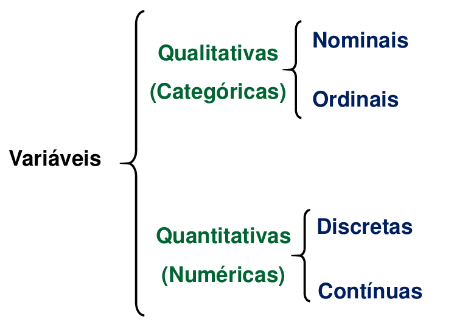
Qualitativas (categóricas)
- Nominal: não possui ordem/hierarquia. Exemplo: raça animal (Raça A, Raça B, Raça C, …).
- Ordinal: possui ordem/ranking/escala lógica. Exemplo: estágios de crescimento (Pequeno, Médio, Grande).
Outros exemplos aplicados à Agronomia e Zootecnia:
Nominais: tipo de cultura (Soja, Milho, Cana-de-açúcar, Café, Algodão); raça de gado (Nelore, Angus, Holandesa, Jersey, Brangus); tipo de solo (Argiloso, Arenoso, Franco); sistema de produção (Intensivo, Extensivo, Orgânico, Convencional); marca de fertilizante ou defensivo agrícola.
Ordinais: intensidade de infestação de pragas (Baixa, Média, Alta); classificação da qualidade do fruto (Primeira, Segunda, Descarte); nível de maturação do fruto (Verde, Maduro, Passado); escore de condição corporal em bovinos (Magro, Ideal, Obeso); nível de severidade de uma doença como a ferrugem (Leve, Moderada, Severa).
Quantitativas (numéricas)
- Discretas: valores inteiros contáveis. Exemplo: número de leitões por parto (1, 2, 3, …, 14, …).
- Contínuas: valores em escala real. Exemplo: peso de animais, altura de plantas (12,4 kg, 14,85 kg, etc.).
Outros exemplos:
Discretas: número de frutos por planta; quantidade de animais por piquete; número de perfilhos por planta de trigo; quantidade de tratores na fazenda; número de ovos produzidos por galinha por dia.
Contínuas: produtividade da cultura (t/ha ou sc/ha); peso do animal (kg); índice pluviométrico (mm); teor de umidade do grão (%); temperatura ambiente no aviário (°C).
Escalas (níveis) de mensuração
Escalas de medida — também chamadas de níveis de mensuração — são importantes porque determinam quais análises estatísticas podem ser realizadas com segurança e como os dados devem ser interpretados. Existem quatro escalas distintas, organizadas hierarquicamente: à medida que se sobe de nível, aumentam tanto a complexidade quanto a informação disponível para a metodologia estatística.
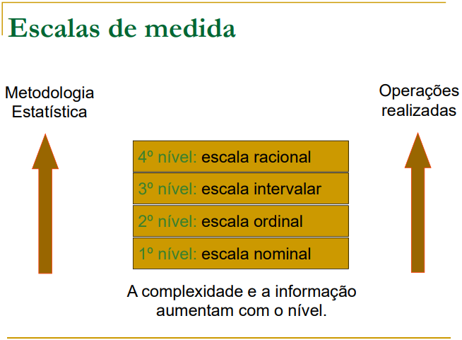
Uma pergunta importante para fixar o conceito: faz sentido calcular uma média em uma base de dados em que estão codificados os números “1 – Angus” e “2 – Hereford”? E se fosse “1 – Pequeno” e “2 – Médio”? E se fosse “0 – Não” e “1 – Sim”? Em nenhum desses casos a média tem uma interpretação sensata, porque os números ali são apenas rótulos (nominal) ou indicam ordem sem distância fixa entre categorias (ordinal) — não são medidas na escala intervalar ou de razão.
Intervalar vs. razão: o que muda na prática?
A distinção entre escala intervalar e de razão costuma ser a mais sutil das quatro. A ideia central: nas duas escalas, o intervalo entre dois pontos quaisquer tem sempre o mesmo “tamanho” (16 graus de diferença entre 32°C e 16°C é a mesma coisa que entre 66°C e 50°C; 10 kg a 20 kg é a mesma diferença que 75 kg a 85 kg). A diferença é que a escala de razão tem um zero absoluto (zero significa “ausência” da grandeza), e a intervalar não.
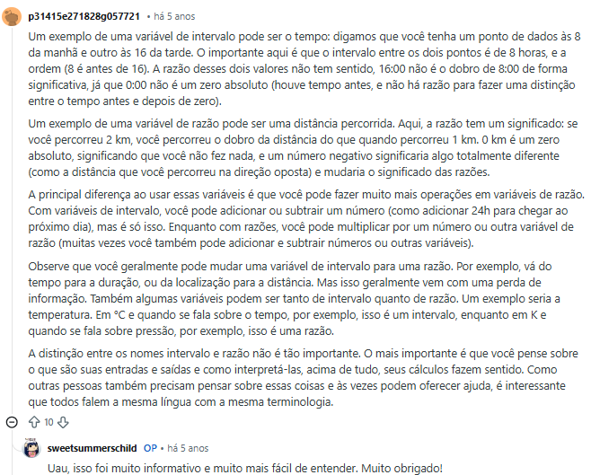
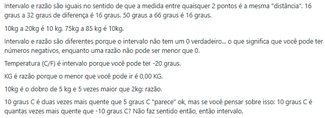
Por exemplo: temperatura em °C/°F é intervalar, porque você pode ter valores negativos (-20°C é um valor válido) — não existe “zero absoluto” de temperatura nessas escalas. Já o peso em kg é de razão, porque o menor valor possível é 0,00 kg, que representa de fato ausência de peso. Isso implica que “10 kg é o dobro de 5 kg” faz sentido (razão), mas “10°C é duas vezes mais quente que 5°C” não faz sentido — a comparação correta precisaria ser feita em Kelvin, que tem zero absoluto.
Na prática, quase todas as variáveis contínuas medidas em Agronomia e Zootecnia (peso, produtividade, altura, precipitação) são de razão. A escala intervalar aparece com menos frequência (temperatura em °C sendo o exemplo clássico).
Coleta e representação de dados (organização)
Tabelas
A forma mais básica de organizar dados coletados é uma tabela. É importante lembrar que a Associação Brasileira de Normas Técnicas (ABNT) estabelece alguns padrões mínimos para tabelas, como a presença de fonte e título.
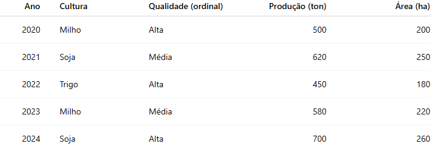
Gráficos
Os principais tipos de gráfico para representar dados são: linha, série temporal, coluna, barra e setor/pizza. A escolha do tipo de gráfico depende da natureza da variável e do que se quer comunicar — evolução ao longo do tempo, comparação entre categorias, ou composição/proporção de um total.
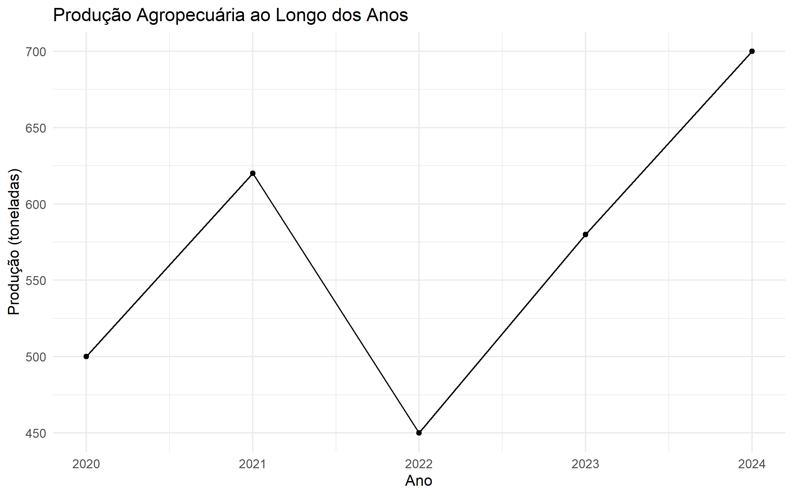
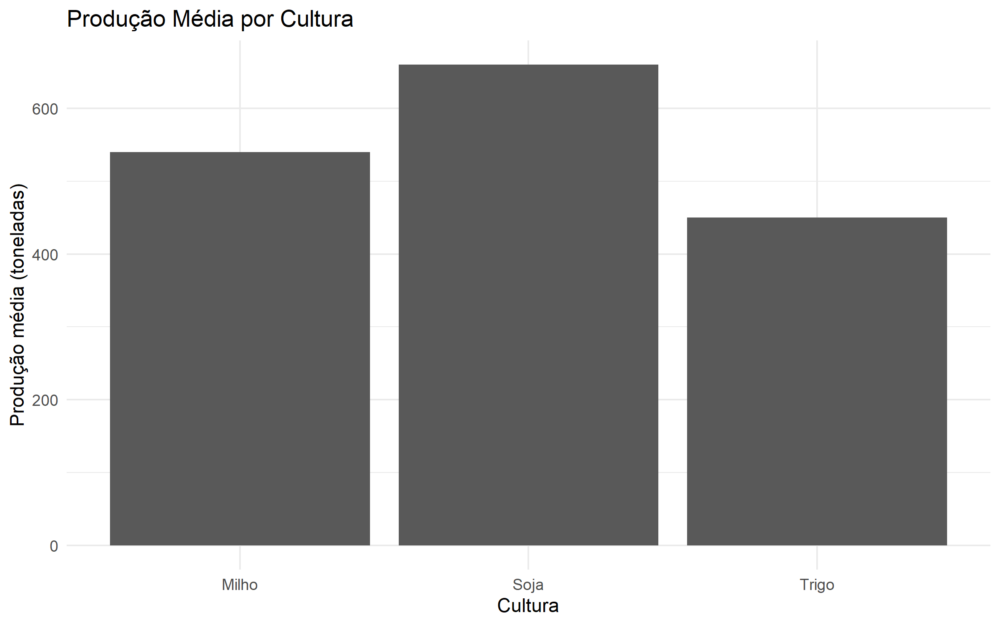
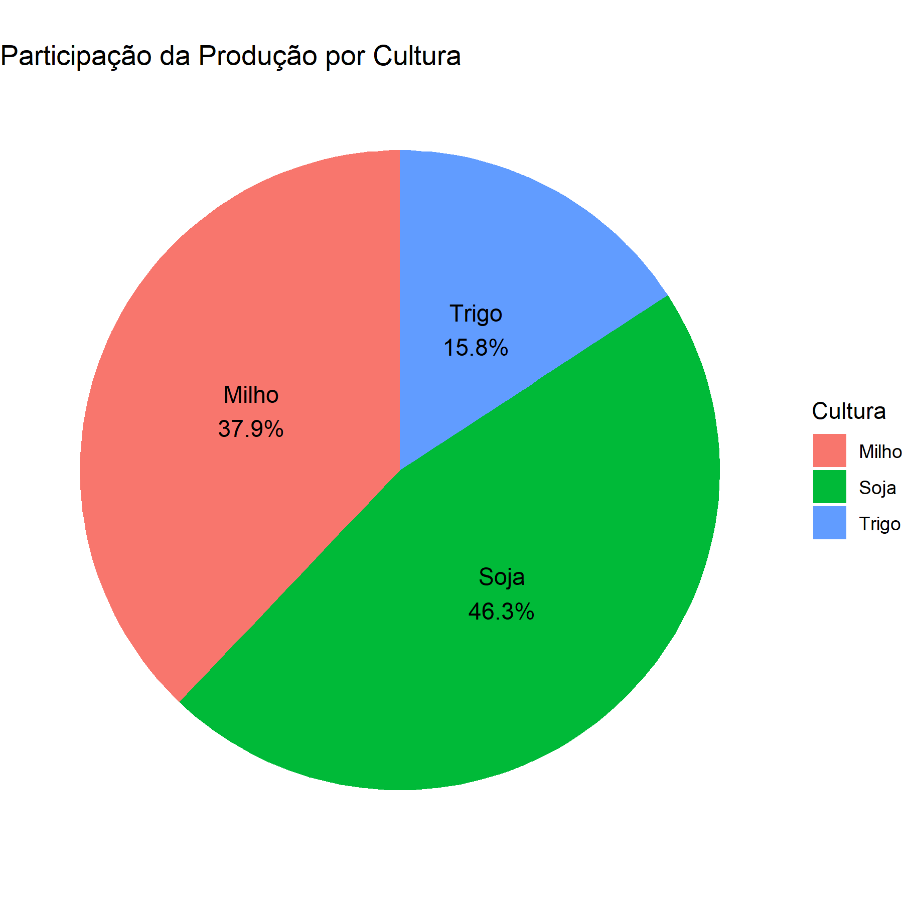
Para mais exemplos de representações gráficas, recomenda-se o material Representações Gráficas do site de Probabilidade e Estatística EAD da UFRGS, além dos materiais suplementares no Moodle. Dois aplicativos interativos também são recomendados: Análise Exploratória — Variáveis Quantitativas e Análise Exploratória — Variáveis Categóricas.
Distribuição de frequências: histograma e boxplot
Histograma
O histograma é a representação gráfica mais usada para visualizar a distribuição de uma variável quantitativa: os dados são agrupados em faixas (classes) e a altura de cada barra representa a frequência de observações naquela faixa.
Quando um valor está muito distante do restante dos dados — um outlier (valor extremo) — ele aparece isolado no histograma, geralmente afastado do “corpo” principal da distribuição:
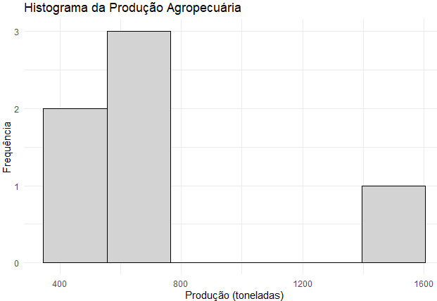
Boxplot
Antes de discutir boxplots propriamente, vale revisar rapidamente as medidas de posição que os compõem (quartis, mediana) — assunto que será aprofundado na próxima seção (Estatística Descritiva - Medidas). O boxplot (ou diagrama de caixa) resume a distribuição de uma variável quantitativa através de cinco números: mínimo, primeiro quartil, mediana, terceiro quartil e máximo, além de sinalizar explicitamente a presença de outliers (geralmente marcados como pontos fora dos “bigodes” da caixa):
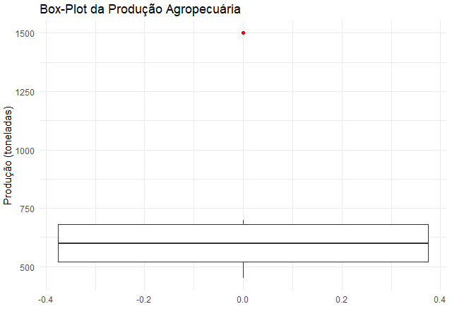
Note como o mesmo conjunto de dados do histograma acima aparece resumido de forma mais compacta no boxplot — a caixa concentra a maior parte dos dados, e o outlier fica claramente destacado como um ponto isolado.
Para saber mais
Para mais exemplos interessantes de representações gráficas, recomenda-se acessar o material Representações Gráficas, bem como os materiais suplementares no Moodle e os aplicativos interativos EDA_quantitative e EDA_categorical.